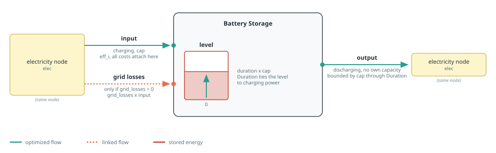

Storage
Storage builders move electricity across time. Battery investment is attached to charging power, while reservoir investment is attached to discharge power. Hydrogen conversion and storage are documented on the Hydrogen page.
See Component Builders for shared naming, workbook, capacity, and port conventions, and Tags And Post-Processing for tagging and reporting. Each section's diagram follows the conventions in Reading The Port Diagrams.
Hydro Reservoir
makehydroreservoir creates a storage component with up to five flows:
naturalis unconnected fixed intake from the reservoir series;inputis grid charging, always present and possibly at zero capacity;outputis electricity generation;spillis optional unconnected release, enabled byspillage;levelis stored energy.

In a balance query, :input selects all input-sense ports. Thus aggregate=true sums the reservoir's natural and input flows, plus grid losses when configured. To distinguish natural intake from grid charging, use aggregate=false and read the "natural" or "input" entry.
The reservoir does not model endogenous capacity expansion, so it is the one builder that departs from the capacity contract: discharge_cap, charge_cap, and energy_cap accept only a number to fix the capacity or an extracted snapshot to inherit it, and take no mincap/maxcap bounds. Neither nothing nor a JuMP expression is accepted, because a model-sized reservoir would be built free of charge: CAPEX and fixed O&M are applied to discharging capacity alone. Costs still apply to the fixed capacities, so an existing fleet reports its annualized cost. If you need an expandable reservoir, write a dedicated component builder for it.
The grid-charging branch always exists: numeric zero charging gives it a zero capacity, so a turbine-only reservoir still reports a charging flow of zero. For the level, use energy_cap=12_000.0 for a fixed 12 GWh reservoir, or omit the keyword (equivalently, pass Inf) to leave the stored-energy level unlimited by adding no level capacity behaviour.
Storage is periodic, so without a spill flow every unit of natural intake must eventually be turbined. That can force uneconomic generation, or make the reservoir infeasible when intake, turbine capacity, and level capacity do not fit together. spillage=true adds an unlimited, uncosted spill output that absorbs the excess. It is opt-in: the default spillage=false keeps the forced use of all inflow. Spilled energy is reported by the hourly sheet's Total spillage and spillage <component> columns.
The intake profile comes from sheet reservoir_inflow_<weather_year>, column <zone>. When intake_profile is omitted and intake is enabled, weather_year must be provided explicitly. It defaults to nothing and is unused with an explicit profile or with intake=0. The profile is always normalized to sum to one, then scaled by the requested total intake.
roundtrip_eff defaults to the row of the same name in the technology column named by tech_column of sheet storage. It applies to grid charging; natural intake and discharge have unit efficiency. grid_losses adds a proportional linked input flow. Cost defaults come from the same technology column and are attached to discharge capacity.
Tags: :tech => tech, :zone => elec.name, and the function tags generation, storage, and carbonfree.
See the Hydro Reservoir example for a turbine-only reservoir, and the Pumped Storage example for a reservoir with grid charging.
Posy2.makehydroreservoir — Function
makehydroreservoir(name::String, zone::String, elec::Node, s::Snapshot;
tech::String=name, tech_column::String=tech,
discharge_cap, charge_cap, intake, energy_cap=Inf, spillage=false,
weather_year=nothing, grid_losses=0., simplified=false,
intake_profile=nothing,
roundtrip_eff::Union{Nothing,Real}=nothing,
overnight_cost::Union{Nothing,Real}=nothing, om_fixed_cost::Union{Nothing,Real}=nothing, om_var_cost::Union{Nothing,Real}=nothing,
decommissioning::Union{Nothing,Real}=nothing, lifetime::Union{Nothing,Real}=nothing,
construction_profile=nothing, decommissioning_profile=nothing,
)Build, connect and return a hydro reservoir component.
This builder does not cover endogenous capacity expansion of the reservoir. discharge_cap, charge_cap and energy_cap are exogenous: unlike the other builders they accept neither nothing nor a JuMP expression, and so are never capacity decisions. A model-sized reservoir would be built free of charge, because CAPEX and fixed O&M are applied to discharging capacity alone. Costs still apply to the fixed capacities, so an existing fleet reports its annualized cost.
If you need an expandable reservoir, please write a dedicated component builder for it. It needs a cost basis for each expanded dimension, which the shared storage technology sheet does not carry.
Arguments:
name: component name prefix.tech: technology label used for reporting and component queries; defaults toname.tech_column: technology column name in thestoragetech data sheet; defaults totech.zone: Zone used for reservoir intake time series lookup.elec: electricity node to connect the component to.s: snapshot to register the component in.discharge_cap: Discharging capacity in MW. A number fixes it, and an extractedSnapshotinherits the capacity of"<name> <node name>"in it.charge_cap: Charging capacity in MW with the same choices. Theinputport is always created; numeric0gives it a zero capacity, so a turbine-only reservoir still reports a charging flow of zero.intake: Total yearly natural intake in MWh, spread over the normalized profile.0disables natural intake.energy_cap: Storage level capacity in MWh, with the same choices asdischarge_cap, plusInf(the default) which leaves the level unlimited by adding no level capacity behavior.spillage: Add an unconnected, unlimitedspilloutput that lets the reservoir release stored energy without generating. It defaults tofalse, which forces all natural intake to eventually become generation.weather_year: Year suffix used to select the intake series stored inreservoir_inflow_<year>. Required whenintake_profileis read from the time-series workbook; unused when a profile is supplied explicitly or natural intake is disabled.grid_losses: Proportional charging-loss fraction (0 <= grid_losses < 1).simplified: Passed toLazyStorage(..., simplified=...).intake_profile: Dimensionless hourly natural-intake shape or scalar, nonnegative with a strictly positive sum. It is normalized to sum to one beforeintakeis applied. Ifnothing, readzonefromreservoir_inflow_<weather_year>.roundtrip_eff: Dimensionless round-trip charging efficiency.overnight_cost: Overnight CAPEX in currency/kW of discharging capacity.om_fixed_cost: Fixed O&M in currency/kW/year of discharging capacity.om_var_cost: Variable O&M in currency/MWh discharged.decommissioning: Decommissioning cost as a fraction of overnight CAPEX.lifetime: Asset lifetime in years (> 0, integer-valued).construction_profile: Dimensionless yearly construction-cost shares.decommissioning_profile: Dimensionless yearly decommissioning-cost shares.
With nothing, economic arguments use workbook values in :excel mode. In :arguments mode, costs default to zero; nonzero overnight cost requires lifetime and construction_profile, plus decommissioning_profile when decommissioning is nonzero.
Batteries
makebatterystorage creates electricity storage with input, output, and level ports. power_cap is the power capacity: a number fixes it, a JuMP variable or affine expression reuses an external decision, nothing creates a new decision, and an extracted snapshot fixes it to the matching component's capacity. power_mincap and power_maxcap bound either variable form. The duration behaviour applies power_cap to charging and to discharging alike, and bounds the level at power_cap * duration.

duration links energy level to power capacity. It is structural: it comes from the storage technology column in :excel mode and must be supplied in :arguments mode. roundtrip_eff sets the storage input efficiency, and simplified selects the corresponding Nosy storage formulation. In :arguments mode, efficiency defaults to one and economic terms to zero; inactive capital and decommissioning data are not resolved. Investment, connection, fixed O&M, decommissioning, and variable O&M costs are attached to input capacity or flow. grid_losses adds a linked charging loss.
Tags: :tech => tech, :zone => elec.name, and the function tags electricity, storage, and generation. These tags make charging and discharging enter the appropriate Posy2 reports.
See the Battery Storage example for a complete model using this builder.
Posy2.makebatterystorage — Function
makebatterystorage(name::String, elec::Node, s::Snapshot;
tech::String=name, tech_column::String=tech,
power_cap=nothing, power_mincap=nothing, power_maxcap=nothing,
simplified=false, grid_losses=0.,
roundtrip_eff::Union{Nothing,Real}=nothing, duration::Union{Nothing,Real}=nothing,
overnight_cost::Union{Nothing,Real}=nothing, om_fixed_cost::Union{Nothing,Real}=nothing,
decommissioning::Union{Nothing,Real}=nothing, lifetime::Union{Nothing,Real}=nothing, construction_profile=nothing, decommissioning_profile=nothing,
connection_cost::Union{Nothing,Real}=nothing, om_var_cost::Union{Nothing,Real}=nothing,
)Build, connect and return a battery storage component.
Arguments:
name: component name prefix.tech: technology label used for reporting and component queries; defaults toname.tech_column: technology column name in thestoragetech data sheet; defaults totech.elec: electricity node to connect the component to.s: snapshot to register the component in.power_cap: Power capacity in MW. It bounds charging and discharging alike, and the stored level atpower_cap * duration. A number fixes capacity, a JuMPVariableReforAffExprreuses that expression,nothingcreates a capacity decision, and an extractedSnapshotinherits the capacity of"<name> <node name>"in it.power_mincap: Lower power-capacity bound in MW; checked as an assertion against a fixed or inherited one.power_maxcap: Upper power-capacity bound in MW; checked as an assertion against a fixed or inherited one.simplified: Passed toBasicStorage(..., simplified=...).grid_losses: Proportional charging-loss fraction (0 <= grid_losses < 1).roundtrip_eff: Dimensionless round-trip storage efficiency.duration: Storage duration in hours (duration > 0); required in:argumentsmode and otherwise read from the workbook whennothing.overnight_cost: Overnight CAPEX in currency/kW of charging capacity.om_fixed_cost: Fixed O&M in currency/kW/year of charging capacity.decommissioning: Decommissioning cost as a fraction of overnight CAPEX.lifetime: Asset lifetime in years (> 0, integer-valued).construction_profile: Dimensionless yearly construction-cost shares.decommissioning_profile: Dimensionless yearly decommissioning-cost shares.connection_cost: Connection cost as a fraction of annualized investment.om_var_cost: Variable O&M in currency/MWh charged.
With nothing, economic arguments use workbook values in :excel mode. In :arguments mode, costs default to zero; nonzero overnight cost requires lifetime and construction_profile, plus decommissioning_profile when decommissioning is nonzero.